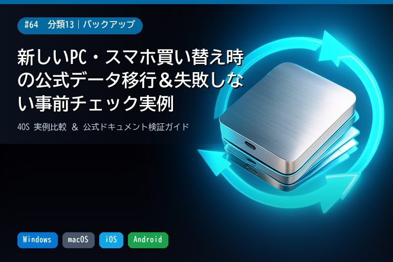

#64｜分類13: ファイル管理・バックアップ・データ復旧 2026-11-24

新しいPC・スマホ買い替え時の公式データ移行＆失敗しない事前チェック実例｜Windows・macOS・iOS・Android
「新しいパソコンやスマートフォンに買い替えるけれど、これまでのデータや設定はどうやって移せばいいの？」「移行中にデータが消えてしまったらどうしよう……」と不安を感じていませんか？
デバイスの買い替えは、単に新しいハードウェアを手に入れるだけでなく、これまで積み上げてきた大切な思い出や仕事の資産を安全に移設する重要な工程です。しかし、OS（オペレーティングシステム）によって公式の移行ツールや手順が全く異なるため、正しく理解していないとデータの消失や、移行後の「あれがない！」というトラブルに直面することになります。
この記事では、Windows、macOS、iOS、Androidの主要4OSにおける「公式なデータ移行手順」を徹底解説します。失敗を防ぐための事前チェックリストも網羅しているため、スムーズな新生活のスタートを切るためのガイドとしてご活用ください。
4OS比較早見表
| OS | 主なバックアップ/移行ツール | 推奨される主な移行手法 | 特徴・注意点 |
|---|---|---|---|
| Windows | ファイル履歴 / システム画像 | OneDrive同期 / 外付けHDDへの手動コピー | アプリ設定の完全移行は標準機能では制限あり |
| macOS | Time Machine / iCloud+ | 移行アシスタント (Migration Assistant) | Apple製品間でのシームレスな移行が可能 |
| iOS | Quick Start / iCloud | iPhone同士の無線転送 / QRコード | Androidからの移行はQRコード経由が基本 |
| Android | Google One / Googleアカウント | Googleアカウント同期 / デバイス移行 | Googleアカウントを軸としたクラウド同期が主流 |
1. Windows 11 での実例手順
Windows環境では、OS全体の「完全なクローン」よりも、ユーザーデータとクラウド同期を組み合わせた移行が現在の主流です。
公式仕様に基づく実例手順
方法 A: ファイル履歴とシステム画像によるバックアップ（外付けHDD経由）
より堅牢な移行を行いたい場合は、公式のバックアップ機能を利用します。
1. 旧PCでの操作: 「コントロールパネル」から「ファイル履歴」を設定し、外付けHDDへ定期的なバックアップを実行します。また、システム全体の状態を保存したい場合は「システム画像作成ツール」を使用し、外付けドライブにイメージを保存します。
2. 新PCでの操作: 新しいPCでWindowsをセットアップした後、「設定 > アカウント > あなたの情報を保存する」でMicrosoft Accountによる同期を有効にします。その後、旧PCからバックアップしたデータ（ドキュメントや写真など）を手動でコピーするか、システムイメージを復元します。
方法 B: クラウド同期によるアプリ・設定の引き継ぎ
1. OneDriveの活用: 「設定 > システム > ストレージ」に関連するフォルダ（デスクトップ、ドキュメント等）をOneDriveと同期させます。新PCでサインインするだけでファイルが自動的に現れます。
2. ブラウザ同期: Microsoft EdgeやGoogle Chromeの「同期機能」をオンにしておけば、ブックマークやパスワードは即座に引き継げます。
標準機能の制限事項
- 他OSへの移行: WindowsからMacへデータを移行する公式ツールは存在しません（Apple Migration AssistantはmacOS専用）。Win→Macへの移行は外付けHDDを介した手動コピー、またはクラウドストレージ経由のみとなります。
- アプリ設定: サードパーティ製ソフトのレジストリ情報や複雑なショートカットキー設定などは、標準機能では完全には復元できません。これらは各アプリ内で再設定が必要です。
よくあるトラブルと解決法 3 選
- トラブル: 「システム画像作成ツール」で「イメージを作成できませんでした」とエラーが出る。
- 原因・対策: 外付けHDDのフォーマット形式（NTFS vs exFAT）が不適切、または容量不足。管理 > デバイスマネージャーでドライブ認識を確認し、適切なフォーマットのSSDを用意するか、OneDrive等のクラウドバックアップへ切り替えてください。
- トラブル: 新PCでアプリをインストールしたが、旧PCの設定（保存場所など）が反映されない。
- 原因・対策: アプリごとの「ユーザーデータフォルダ」の移動は非推奨です。公式には対応していないため、「ドキュメント」等の標準フォルダのみ同期し、それ以外は手動で再配置する必要があります。
- トラブル: Microsoft Accountでログインしたが、OneDriveのファイルが同期されない。
- 原因・対策: 「設定 > アカウント > サインインのオプション」からパスワードや2段階認証を正しく確認してください。ブラウザ版のOneDriveを開き、手動で同期ボタンを押すことで解決する場合があります。
2. macOS での実例手順
MacはAppleのエコシステム内であれば、非常に高度な自動移行が可能です。
公式仕様に基づく実例手順
方法 A: Time Machine でバックアップ・復元
1. 旧Macでの操作: 外付けHDDを接続し、「システム設定 > 一般 > Time Machine」から「今すぐバックアップ」を実行します。
2. 新Macでの操作: OSインストール直後のセットアップ画面で「移行アシスタント（Migration Assistant）」を起動。「Time Machine バックアップから復元」を選択すると、ユーザーアカウントやアプリケーションが自動コピーされます。
方法 B: iCloud+ を活用した手動引き継ぎ
1. 同期の確認: 「設定 > Apple ID > iCloud」で、写真、メモ、iCloud Driveの同期をオンにします。新Macでサインインするだけで、これら主要データは自動的に同期されます。
標準機能の制限事項
- 他OSへの移行: Windows PCからMacへTime Machineで移行することは不可能です。Win→Macは外付けHDDでの手動コピーが基本です。
- Androidからの移行: iPhoneへの「Quick Start」は可能ですが、Android側で特定の公式アプリをインストールするのではなく、iPhoneの初期設定画面でQRコードを読み取るのが唯一の標準方法です。
よくあるトラブルと解決法 3 選
- トラブル: 「移行アシスタント」で「Time Machine バックアップが見つかりません」と表示される。
- 原因・対策: 外付けHDDが新Macで認識されていないか、バックアップが未完了です。「システム情報 > USB」でドライブ確認後、再度バックアップを待機させてください。
- トラブル: 写真アプリのデータが多すぎて移行に時間がかかる（またはタイムアウト）。
- 原因・対策: iCloudフォトの容量不足、またはローカル保存分が多すぎる場合に起こります。外付けHDDを介したTime Machineでの「システム全体」バックアップを行うのが最も確実です。
- トラブル: 新Macにログインしたが、「Face ID」や「Touch ID」の設定が失敗する。
- 原因・対策: 生体認証データはセキュリティ上、端末間で引き継げません。「システム設定 > タッチ ID と Face ID」から新機種の指紋を再登録する必要があります。
3. iOS（iPhone / iPad）での実例手順
iPhoneへの移行は、Appleが提供する「Quick Start」という非常に強力なツールを利用します。
公式仕様に基づく実例手順
方法 A: Quick Start で iPhone から iPhone へ
1. 操作: 新しいiPhoneを起動し、旧iPhoneの横に置きます。「新しいiPhoneにデータを移す」を選択。
2. 転送: QRコードを読み取り、Wi-Fi経由で無線転送するか、「iCloudから復元」を選択してバックアップから読み込みます。
方法 B: Android から iOS (iPhone) へ
1. 操作: iPhoneの初期化画面でAndroidスマホを接続します。
2. 転送: 「このiPhoneはAndroidからデータを移すか？」を選択し、Android側のQRコードを読み取ります（GoogleアカウントとWi-Fiで同期）。
標準機能の制限事項
- LINEのトーク履歴: iOS/Android共通の「公式ツールでの自動移行」はありません。LINEアプリ内でのバックアップ・復元操作、またはPC版アプリを経由した操作が必要です。
- ファイルアクセス: 「iCloud Drive」はWindowsからアクセス可能ですが、Windows Explorer上でiPhone内のファイルを直接編集できる機能は標準では限定的です。
よくあるトラブルと解決法 3 選
- トラブル: Quick StartでAndroidからiOSへ移行する際、転送途中で止まる。
- 原因・対策: Wi-Fiの不安定さやGoogleアカウントの同期未完了が原因です。「設定 > Apple ID, iCloud, メディアと購入」から容量を確認し、必要なら追加してください。LINE等のアプリはPC版でバックアップを取ってから移行するのが安全です。
- トラブル: LINEの「2段階認証引き継ぎ」がうまくいかない。
- 原因・対策: 旧端末を消去する前に必ずPCブラウザ版でログアウト確認を行い、パスワード変更とSMS/Authenticatorでの再登録を正しく行ってください。
- トラブル: 写真アプリのデータが「iCloudフォト」ではなくローカル保存されており、移行に時間がかかる。
- 原因・対策: 「設定 > [自分の名前] > iCloud > 写真」で同期設定を確認してください。「このiPhoneに写真をダウンロードして保持する」をオフにしてからQuick Startを実行すると高速化できます（※データ損失リスクに注意）。
4. Android での実例手順
AndroidはGoogleアカウントを中心としたクラウドベースの移行が非常にスムーズです。
公式仕様に基づく実例手順
方法 A: Google アカウント同期による自動引き継ぎ
1. 操作: 新しいAndroidスマホで初期化画面からQRコードを読み取るか、セットアップウィザードに従います。
2. 同期: Googleアカウントにログインすると、連絡先、カレンダー、Googleフォト、Chromeのブックマークなどが自動的に同期されます。
標準機能の制限事項
- アプリ内データ: ゲームの進行状況や特定のSNS（LINE等）のトーク履歴は、Googleアカウントのバックアップだけでは引き継げないことが多く、各アプリ内での個別のバックアップ操作が必要です。
よくあるトラブルと解決法 チェックリスト
移行作業中に「あれ？」と思ったら、以下のチェックリストを確認してください。
- [ ] 【ネットワーク】Wi-Fi環境は安定しているか？
- 転送エラーの多くは通信の瞬断です。可能であれば5GHz帯の安定したWi-Fi、または高速な有線LAN環境で行ってください。
- [ ] 【ストレージ】移行先の容量は十分か？
- 特に写真や動画が多い場合、新デバイスの空き容量が不足していると途中で停止します。不要なキャッシュを削除してから開始しましょう。
- [ ] 【アカウント】2段階認証の設定は済んでいるか？
- 移行完了後、アプリにログインできない原因の多くは「旧端末での承認」が必要なためです。事前にPCブラウザ版でログイン確認を済ませておきましょう。
- [ ] 【LINE】トーク履歴のバックアップは取ったか？
- LINEはOS標準の移行機能では完全には移りません。必ずアプリ内の「トークのバックアップ」を実行してから新端末へ移行してください。
まとめ：快適なマルチOS環境を作るポイント
デバイスの買い替えを成功させる鍵は、「公式ツールの正しい理解」と「二重のバックアップ」にあります。標準機能だけで完結させようとせず、以下の準備を整えることでリスクを最小限に抑えられます。
- 外付けHDD/SSDの活用:
OSのシステムイメージや大量の写真データは、クラウドだけでなく物理的な外付けドライブにも保存しましょう。特にWindowsやMacの「システム全体」のバックアップには必須です。 - クラウドバックアップの併用:
OneDrive, iCloud, Google Oneなどのクラウドサービスを常時活用することで、デバイス紛失や故障時でもデータを取り戻せる安心感が得られます。 - データ復旧ソフト・ツールの検討:
万が一の操作ミスによるデータ消失に備え、信頼できるデータ復旧ソフトをあらかじめ把握しておくこともプロの視点です。
新しいデバイスへの移行は、単なる「移動」ではなく「データの整理」のチャンスでもあります。今回のガイドを参考に、安全でスムーズな移行を実現してください。
参考文献・公式ドキュメント（一次情報ソース）
本記事の手順・仕様は以下の各OSおよびツールの公式ドキュメントに基づいています。OSアップデートによりメニュー名称や挙動が変わる場合があるため、最新仕様の確認にもご活用ください。